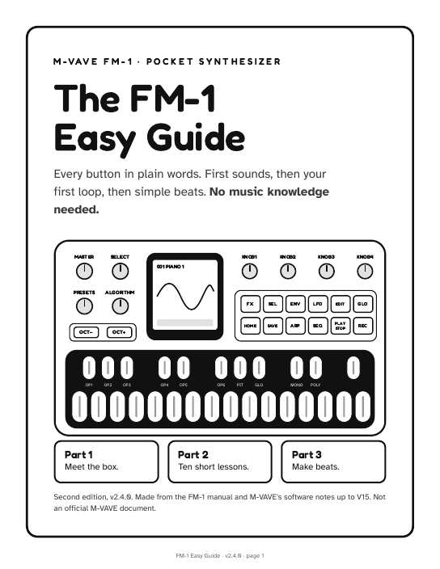
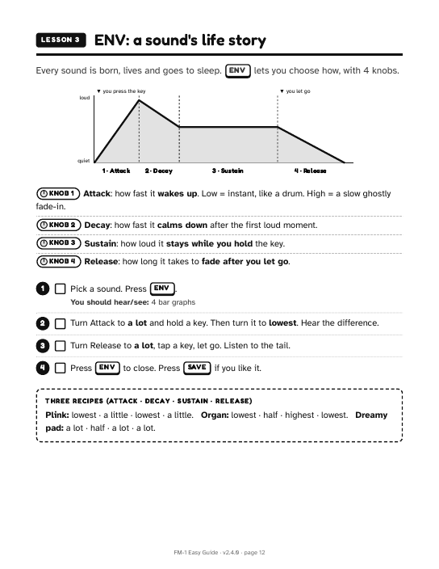
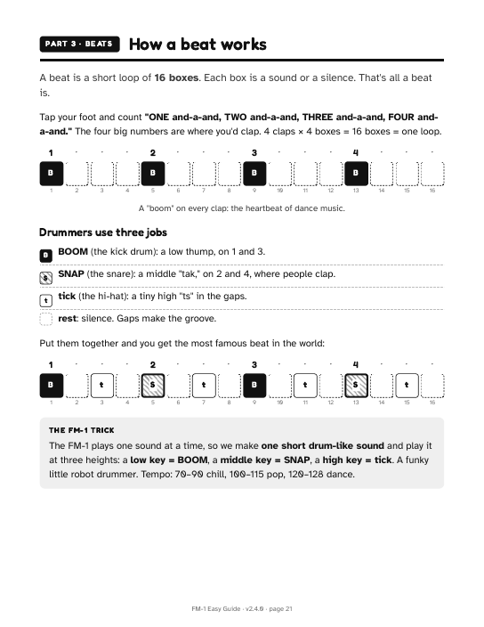

The official manual for the M-VAVE FM-1 pocket synthesizer is genuinely hard to read — dense tables, translated phrasing, and it predates the firmware that changed how the sequencer works.
This project breaks the whole machine down into plain-words, interactive lessons you can follow along with: a free 31-page guide where every page is one idea with tick-box steps, and a clickable on-screen FM-1 that makes real sound while it walks you through the buttons, your first sounds and your first beat. No music knowledge needed.
The PDF prints fine in black & white. The demos run in any modern browser, sound and all. Running the free SLOOP firmware (a 4-track groovebox for the FM-1)? Its own tutorial teaches loops, layering and four ready-made grooves.



Three of the 31 pages: the cover, a lesson, and how a beat works.